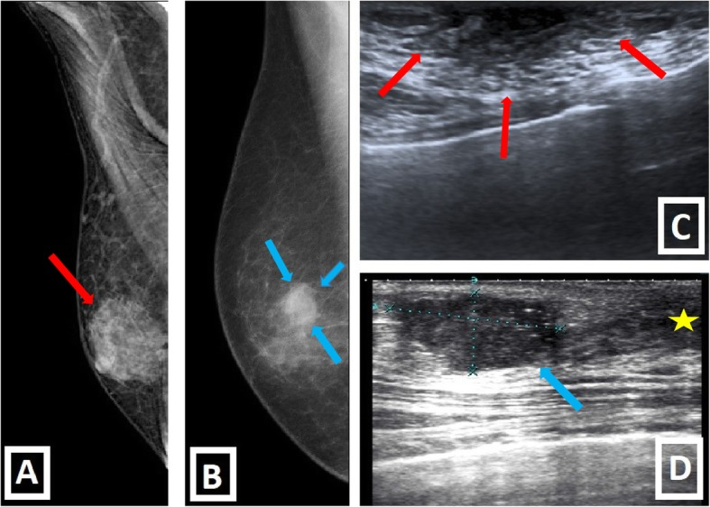
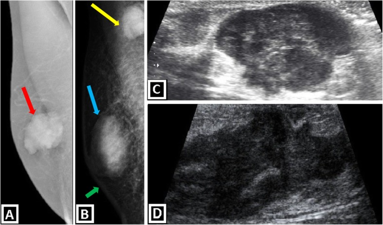

1791 — Ung thư vú ở nam giới / Male breast cancer (MBC)
Tags: pattern:khoi-sau-num pattern:khoi-mot-ben pattern:vi-voi-hoa vung:vu score:BI-RADS protocol:nhu-anh protocol:US-vu protocol:MRI-vu
Mức chắc chắn (certainty): tổng hợp y văn (literature synthesis) — số liệu lấy từ bài tổng quan hình ảnh vú nam (Insights into Imaging 2020, PMC7028902) + y văn MBC; các ngưỡng BI-RADS theo ACR 5th edition. Không gắn một ca nguyên văn duy nhất.
1. Tổng quan bệnh học – cơ chế hình ảnh
- Dịch tễ: MBC chiếm ~1% toàn bộ ung thư vú và < 1% ung thư ở nam; tỷ lệ mắc ~1,0–1,5/100.000 nam/năm (SEER, Mỹ). Tuổi trung vị 67–71, muộn hơn nữ ~5 năm. Đây là bệnh hiếm nhưng không được bỏ qua, vì khối sau núm ở nam thường bị quy ngay cho gynecomastia.
- Yếu tố nguy cơ (có con số):
- BRCA2 là gen mạnh nhất: nguy cơ ung thư vú suốt đời ở nam ~6–8% (NCCN), và 10–15% nam mắc MBC mang đột biến BRCA2; BRCA1 thấp hơn nhiều (~1–2%).
- Hội chứng Klinefelter (47,XXY): nguy cơ tăng 20–50 lần, nguy cơ tuyệt đối ~5%.
- Phơi nhiễm tia xạ ngực, béo phì, xơ gan/rượu (tăng estrogen – giảm thanh thải), dùng estrogen ngoại sinh, tiền sử gia đình, CHEK2/PALB2/PTEN.
- Vì sao hình ảnh khác nữ: vú nam chỉ có ống tuyến + mô đệm + mỡ, không có tiểu thùy → thể mô học hay gặp là ung thư biểu mô ống xâm lấn (IDC, ~90%); thể tiểu thùy gần như không có; thể nhú (papillary) chiếm ~5% (hay chảy dịch núm). Thể tích vú nhỏ, núm sát khối → u nhanh chóng xâm lấn da/núm, nên T4/da gặp nhiều hơn nữ.
- Sinh học thụ thể: ER+ 90–95%, PR+ ~80%, HER2+ chỉ ~5–15% (thấp hơn nữ). Điều này giải thích vì sao tamoxifen là trụ cột nội tiết ở nam, còn ức chế aromatase đơn thuần không được khuyến cáo (thiếu dữ liệu, cần phối hợp ức chế trục sinh dục).
- Vì sao khối ác tính trông đậm và gai trên nhũ ảnh: tế bào u + phản ứng xơ hóa mô đệm (desmoplasia) làm mô đặc hơn mỡ xung quanh → độ cản tia tăng, bờ gai (spiculated) do dây xơ co kéo; vi vôi hóa do hoại tử ống tuyến. Trên siêu âm, mô u đặc – giàu tế bào – nhiều collagen → giảm âm (hypoechoic), bóng lưng (posterior shadowing), không song song với da (not parallel), bờ không đều.
- Ngược lại, gynecomastia là tăng sinh ống tuyến + mô đệm quanh ống (không phải u đặc) → mô hình quạt/đĩa quanh núm, đối xứng, không co kéo, không bóng lưng. Đây là khác biệt vật lý cốt lõi giữa hai bệnh cảnh.
- Tiên lượng theo giai đoạn (AJCC 8th): sống 5 năm toàn bộ ~80–85%; giai đoạn I ~95%, II ~85–90%, III ~60–70%, IV ~20–25%. MBC thường được chẩn đoán muộn (~40% giai đoạn III–IV trong nhiều loạt) vì tâm lý "đàn ông không bị ung thư vú".
2. Mẫu hình + chẩn đoán phân biệt theo vị trí (gamut)
- Khối sau núm trung tâm, đối xứng, hai bên hoặc một bên: gynecomastia (thể nodular, dendritic, diffuse glandular), pseudogynecomastia (chỉ mỡ), áp-xe/viêm tuyến vú, u mỡ, nang thượng bì.
- Khối lệch tâm so với núm (eccentric), bờ không đều, một bên: IDC (hay gặp nhất), ung thư biểu mô thể nhú, DCIS (hiếm, thường chỉ vi vôi hóa), lymphoma, di căn (tuyến tiền liệt, phổi, melanoma).
- Chảy dịch núm (nhất là dịch máu) hoặc loét núm: u nhú trong ống, ung thư thể nhú, bệnh Paget — không được theo dõi "gynecomastia" mà bỏ qua.
- Khối nách đơn độc: hạch di căn từ u vú ẩn, lymphoma, di căn ngoài vú; cần siêu âm + sinh thiết hạch, không mặc định "hạch phản ứng".
- Mnemonic GAMUT khối vú nam: Gynecomastia, Abscess/mastitis, Malignancy (IDC/papillary), Uncommon benign (lipoma, epidermal cyst, fat necrosis), Transfer/metastasis (prostate, lymphoma).
3. Bảng so sánh phân biệt (ma trận đối chiếu)
| Thực thể (entity) | Hình ảnh điển hình (nhũ ảnh / siêu âm) | Chốt vào (rule-in) | Chốt loại (rule-out) | Gợi ý xác nhận |
|---|---|---|---|---|
| Gynecomastia thể nốt | Nhũ ảnh: hình quạt/đĩa trung tâm sau núm, đậm đều, không vi vôi hóa, thường hai bên. US: mô giảm âm hình đĩa quanh núm, bờ mờ, không bóng lưng | Trung tâm + đối xứng + không co kéo da/núm + không vi vôi hóa | Lệch tâm + bờ gai + vi vôi hóa + co kéo → loại gynecomastia | So sánh hai bên, hỏi thuốc (spironolactone, cimetidine, finasteride), chức năng gan/thận |
| IDC (ung thư ống xâm lấn) | Khối đậm, lệch tâm, bờ gai/không đều; US: giảm âm, không song song, bóng lưng, ± vi vôi hóa | Lệch tâm so với núm + bờ gai + co kéo da/núm | Tổn thương thuần mỡ (−40 đến −120 HU tương đương) → không phải IDC | Core biopsy 14G dưới siêu âm; BI-RADS 4C–5 |
| Ung thư thể nhú | Khối sau núm bờ rõ, có thể dạng nang–đặc (complex cystic–solid), chảy dịch núm máu | Dịch núm máu + khối nang–đặc sau núm | Nang đơn thuần, không thành phần đặc → theo dõi | Siêu âm + chọc hút/sinh thiết; không phân biệt được với IDC chỉ bằng hình ảnh |
| Áp-xe/viêm tuyến vú | Da dày, phù mô mỡ, ổ dịch có viền ngấm thuốc, đau, sốt | Ổ dịch + sốt/đau khu trú | Khối đặc không dịch hóa → không phải áp-xe đơn thuần | Siêu âm + chọc hút; cấy mủ |
| Hoại tử mỡ | Tiền sử chấn thương/mổ; nang dầu, viền vôi hóa thô, không ngấm thuốc | Bối cảnh chấn thương + tổn thương mỡ có viền | Bờ gai tiến triển + ngấm thuốc → nghi ung thư | Theo dõi 3–6 tháng hoặc sinh thiết nếu không điển hình |
| Nang thượng bì | Sát da, có lỗ trung tâm (punctum), giảm âm, có cặn; không mạch trong | Liên tục với da + không tăng sinh mạch | Thành phần đặc ngấm thuốc → loại nang đơn thuần | Siêu âm; mổ bóc nếu viêm tái diễn |
| Di căn/lymphoma | Nhiều khối, hai bên, phát triển nhanh; hạch nách lớn | Tiền sử ung thư ngoài vú + nhiều tổn thương | Tổn thương đơn độc điển hình IDC → vẫn phải mô học | Sinh thiết + hóa mô miễn dịch |

Trái (A, C): gynecomastia thể nốt — đậm hình quạt trung tâm sau núm trên nhũ ảnh, mô giảm âm hình đĩa trên siêu âm (mũi tên đỏ). Phải (B, D): IDC — khối lệch tâm, bờ không đều, giảm âm có bóng lưng (mũi tên xanh). Nguồn: Insights into Imaging 2020 (PMC7028902), CC BY 4.0.
(A, B) Nhũ ảnh MLO: khối thùy sau núm đậm, không vi vôi hóa (mũi tên đỏ/xanh); (B) còn thấy hạch nách (mũi tên vàng) và dày da (mũi tên xanh lá). (C, D) Siêu âm: khối giảm âm không đồng nhất, bờ không đều. Nguồn: Insights into Imaging 2020 (PMC7028902), CC BY 4.0.4. Protocol chụp + hệ phân độ/điểm chuẩn hóa
- Chỉ định: nam có khối sờ thấy, đau khu trú, chảy dịch núm, loét/co kéo núm → nhũ ảnh chẩn đoán + siêu âm vú cùng bên, không dùng nhũ ảnh tầm soát đơn thuần.
- Nhũ ảnh: MLO + CC, đánh dấu khối bằng marker trên da, núm nhìn nghiêng; chụp phóng đại khi có vi vôi hóa. Ở nam, mô mỡ nhiều → độ nhạy cao nhưng độ đặc hiệu thấp; khối đậm nổi bật trên nền mỡ nhưng dễ nhầm với gynecomastia trung tâm.
- Siêu âm: đầu dò 12–15 MHz, khảo sát radial/antiradial, đo 3 chiều + độ sâu từ da, mô tả bờ, hướng (song song/không song song), bóng lưng, mạch; luôn khảo sát nách (hạch level I–II).
- MRI vú: không thường quy; cân nhắc khi nhũ ảnh + siêu âm không kết luận, vú rất đặc, hoặc theo dõi BRCA2. Động học DCE: Type III (washout > 10%) nghiêng ác; ADC < 1,0–1,2 × 10⁻³ mm²/s gợi ý ác nhưng không đủ loại trừ.
- BI-RADS 5th edition (ACR):
- BI-RADS 3: nguy cơ ác ≤ 2% → theo dõi 6 tháng (và 12–24 tháng).
- BI-RADS 4: 2–95%; chia 4A 2–10%, 4B 10–50%, 4C 50–95% → bắt buộc sinh thiết.
- BI-RADS 5: ≥ 95% ác → sinh thiết ± chụp giai đoạn.
- Sinh thiết: core kim 14G dưới siêu âm; nếu chỉ có vi vôi hóa → sinh thiết hút chân không (VABB) có định vị.
- Giai đoạn: AJCC 8th giống nữ. Giai đoạn I–II: không chụp tầm soát di căn thường quy; giai đoạn III: CT ngực–bụng–chậu + xạ hình xương hoặc PET/CT FDG.
- Di truyền: mọi nam mắc MBC đều được xét nghiệm BRCA1/2 (NCCN); nếu BRCA2 dương → tầm soát tuyến tiền liệt và tụy theo tuổi/gia đình.
flowchart TD
A[Khối sau núm ở nam] --> B[Nhũ ảnh chẩn đoán + siêu âm vú]
B --> C{Kết quả}
C -->|Trung tâm, đối xứng, không vi vôi hóa| D[Gynecomastia - BI-RADS 2]
C -->|Lệch tâm, bờ gai, co kéo| E[BI-RADS 4C-5: sinh thiết core 14G]
C -->|Không kết luận| F[MRI vú có cản quang]
E --> G{Giải phẫu bệnh}
G -->|Ác tính| H[Xét nghiệm BRCA1/2 + giai đoạn AJCC]
G -->|Lành tính| I[Theo dõi 6-12 tháng]
H --> J[Điều trị đa mô thức: mổ + tamoxifen ± hóa-xạ]
5. Biến thể bình thường và cạm bẫy
- Pseudogynecomastia: chỉ là mỡ, không có mô tuyến; trên nhũ ảnh không có hình quạt đậm, trên siêu âm không có mô giảm âm sau núm — không sinh thiết.
- Gynecomastia một bên (20–25%): bất đối xứng không đồng nghĩa ung thư; nhưng nếu phần đậm lệch tâm khỏi núm thì phải siêu âm + sinh thiết.
- Marker núm/da có thể giả vi vôi hóa hoặc giả nốt — chụp lại không marker khi nghi ngờ.
- Bỏ sót thứ hai (satisfaction of search): thấy gynecomastia hai bên rồi dừng, bỏ khối lệch tâm nhỏ ở 1/4 trên–ngoài. Luôn đọc từng 1/4 và nách.
- Dày da sau xạ trị không phải tái phát; so phim cũ và đối chiếu vùng chiếu.
- Cơ ngực lớn (pectoralis) nhô ra ở thành ngực trước tạo "khối" giả trên siêu âm — nhận diện bằng cấu trúc sợi cơ và nghiệm pháp gồng cơ.
- Vú nam bình thường có mô tuyến giảm âm sau núm — đừng gọi mọi vùng giảm âm sau núm là ung thư; bờ, hướng và bóng lưng mới là chốt.
- Nguy cơ vú đối bên ~5–10% và nguy cơ di căn xa muộn → theo dõi lâm sàng lâu dài, không chỉ 5 năm.
6. Tự lượng giá — Blind Quiz ngay trên trang tĩnh
Ca 1 — Nam, khối sau núm mềm, đối xứng hai bên, không chảy dịch núm.
- Câu hỏi: Mô tả hình dạng tổn thương trên nhũ ảnh và siêu âm? Ba chẩn đoán phân biệt? Dấu hiệu nào loại ung thư?
Bấm để hiện đáp án (findings + chẩn đoán)
- Findings: (A) đám đậm hình quạt/đĩa trung tâm sau núm, đối xứng; (C) siêu âm mô giảm âm hình đĩa, bờ mờ, không bóng lưng, không có vi vôi hóa.
- Chẩn đoán: gynecomastia thể nốt (nodular gynecomastia) — tăng sinh ống tuyến + mô đệm, không phải u đặc.
- Loại ung thư vì: trung tâm – đối xứng – không co kéo – không vi vôi hóa – không bóng lưng.
- Nguồn: Insights into Imaging 2020 (PMC7028902), CC BY 4.0.
Ca 2 — Nam 60–70 tuổi, khối cứng lệch tâm sau núm trái, núm co kéo.
- Câu hỏi: Khối nằm trung tâm hay lệch tâm? Có dấu hiệu xâm lấn da/hạch không? Bước tiếp theo?
Bấm để hiện đáp án (findings + chẩn đoán)
- Findings: khối thùy, đậm, lệch tâm so với núm, bờ không đều (mũi tên đỏ/xanh); (B) có hạch nách (mũi tên vàng) và dày da (mũi tên xanh lá); siêu âm (C, D) khối giảm âm không đồng nhất, bờ không đều.
- Chẩn đoán: ung thư biểu mô ống xâm lấn (IDC) vú nam, có hạch nách → BI-RADS 5, cần core biopsy 14G + xét nghiệm BRCA1/2 + đánh giá giai đoạn.
- Vì sao: phản ứng xơ hóa mô đệm làm khối đậm, gai, co kéo da/núm; hạch nách là tiêu chí N.
- Nguồn: Insights into Imaging 2020 (PMC7028902), CC BY 4.0.
Câu 3 — Sau khi có giải phẫu bệnh ER+ ở nam giai đoạn II, nội tiết nào là chuẩn?
Bấm để hiện đáp án
- Tamoxifen 20 mg/ngày trong 5 năm là lựa chọn hàng đầu ở nam (dữ liệu tốt, giảm tái phát và tử vong).
- Ức chế aromatase đơn thuần không được khuyến cáo ở nam vì thiếu dữ liệu và cần phối hợp ức chế trục sinh dục; không dùng thay tamoxifen theo quán tính từ phác đồ nữ.
Bài liên quan chéo
- 500 – Tổng quan Hệ Vú & Sản Phụ khoa
- 510 – Vú: BI-RADS nhũ ảnh, siêu âm, MRI
- 516 – Hình ảnh vú sau điều trị: tái tạo, hoại tử mỡ, sẹo vs tái phát
- 1714 – Chảy dịch núm một ống
- 1790 – Bùng phát viêm gan B khi điều trị ung thư vú
Ảnh
images/1791_PMC7028902_fig5.jpg— gynecomastia vs IDC, Insights into Imaging 2020 (PMC7028902), CC BY 4.0.images/1791_PMC7028902_fig11.jpg— IDC vú nam (nhũ ảnh + siêu âm), cùng bài, CC BY 4.0.- Nguồn + giấy phép từng ảnh:
images/CREDITS.md.
Không dùng để chẩn đoán độc lập khi chưa có người hướng dẫn.